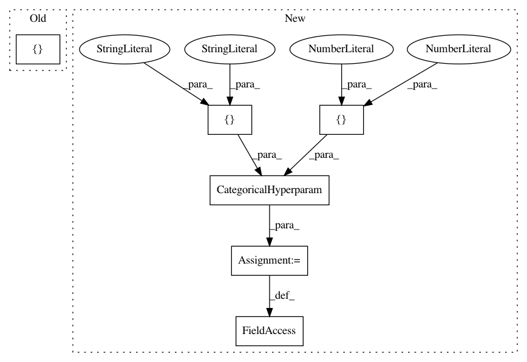

5049f57afbab4e6ede9e6b91a26857ed5668307e,examples/tune_hyperparams.py,,,#,7
Before Change
xg_learning_rate = ContinuousHyperparam(["model","shallow_model","learning_rate"],0,1)
scale_pos_weight = CategoricalHyperparam(["model","shallow_model","scale_pos_weight"],[1,10.0,100.0])
num_samples = CategoricalHyperparam(["model","shallow_model","num_samples"],[10000,100000,1000000,1e7])
tunables = [shallow_model,n_estimators,max_depth,C,kernel,xg_learning_rate,scale_pos_weight,num_samples] //target
else:
//for DL
lr = LogContinuousHyperparam(["model","lr"],1e-7,1e-4)
After Change
num_samples = CategoricalHyperparam(["model","shallow_model","num_samples"],[10000,100000,1000000,1e7])
hidden_size = CategoricalHyperparam(["model","final_hidden_layer_size"],[5,10,20])
hidden_num = CategoricalHyperparam(["model","num_hidden_layers"],[2,4])
mlp_learning_rate = CategoricalHyperparam(["model","learning_rate_mlp"],[0.001,0.0001,0.00001])
tunables = [shallow_model,n_estimators,max_depth,C,kernel,xg_learning_rate,scale_pos_weight,num_samples,hidden_num,hidden_size,mlp_learning_rate] //target
else:
//for DL
lr = LogContinuousHyperparam(["model","lr"],1e-7,1e-4)
In pattern: SUPERPATTERN
Frequency: 3
Non-data size: 6
Instances
Project Name: PPPLDeepLearning/plasma-python
Commit Name: 5049f57afbab4e6ede9e6b91a26857ed5668307e
Time: 2017-11-16
Author: julian@Julians-MacBook-Pro.local
File Name: examples/tune_hyperparams.py
Class Name:
Method Name:
Project Name: PPPLDeepLearning/plasma-python
Commit Name: 36c9dc281107e3f2fee37671622bef533a123f12
Time: 2017-11-06
Author: jk7@tigergpu.princeton.edu
File Name: examples/tune_hyperparams.py
Class Name:
Method Name:
Project Name: PPPLDeepLearning/plasma-python
Commit Name: e22b32ebfba888f99ebb7d5328b43aa1be153152
Time: 2018-02-01
Author: jk7@tigergpu.princeton.edu
File Name: examples/tune_hyperparams.py
Class Name:
Method Name: